Page 14 · Two surprising moons
Titan & Enceladus
Titan hides beneath orange haze and has methane lakes. Tiny, icy Enceladus sprays water-rich material from fractures near its south pole.
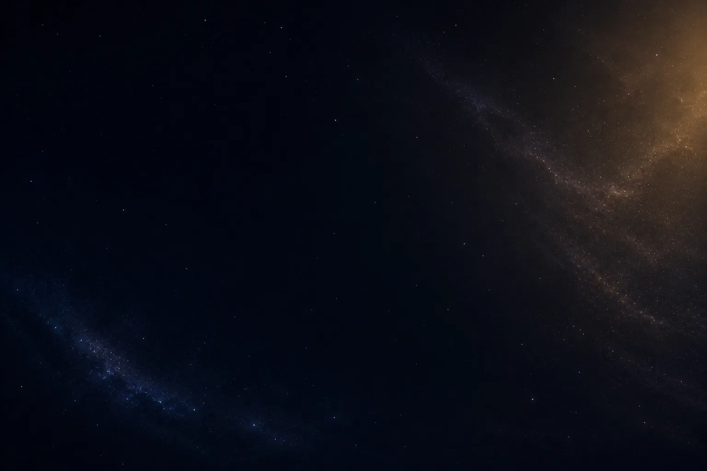
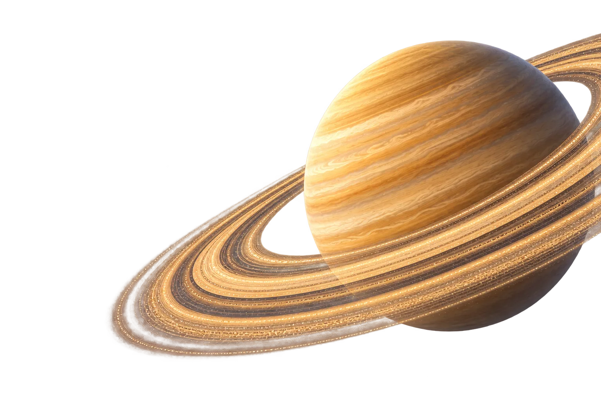
Titan hides beneath orange haze and has methane lakes. Tiny, icy Enceladus sprays water-rich material from fractures near its south pole.
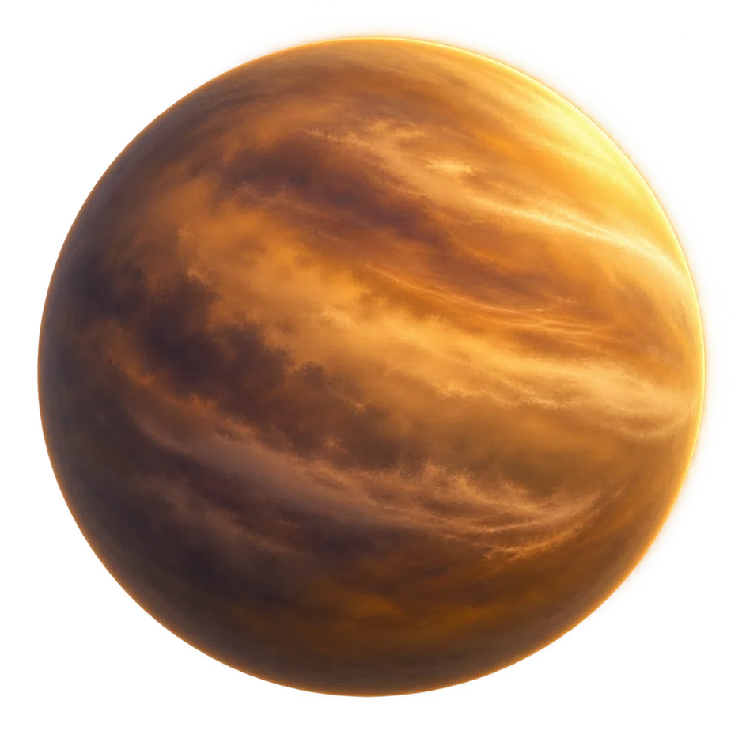
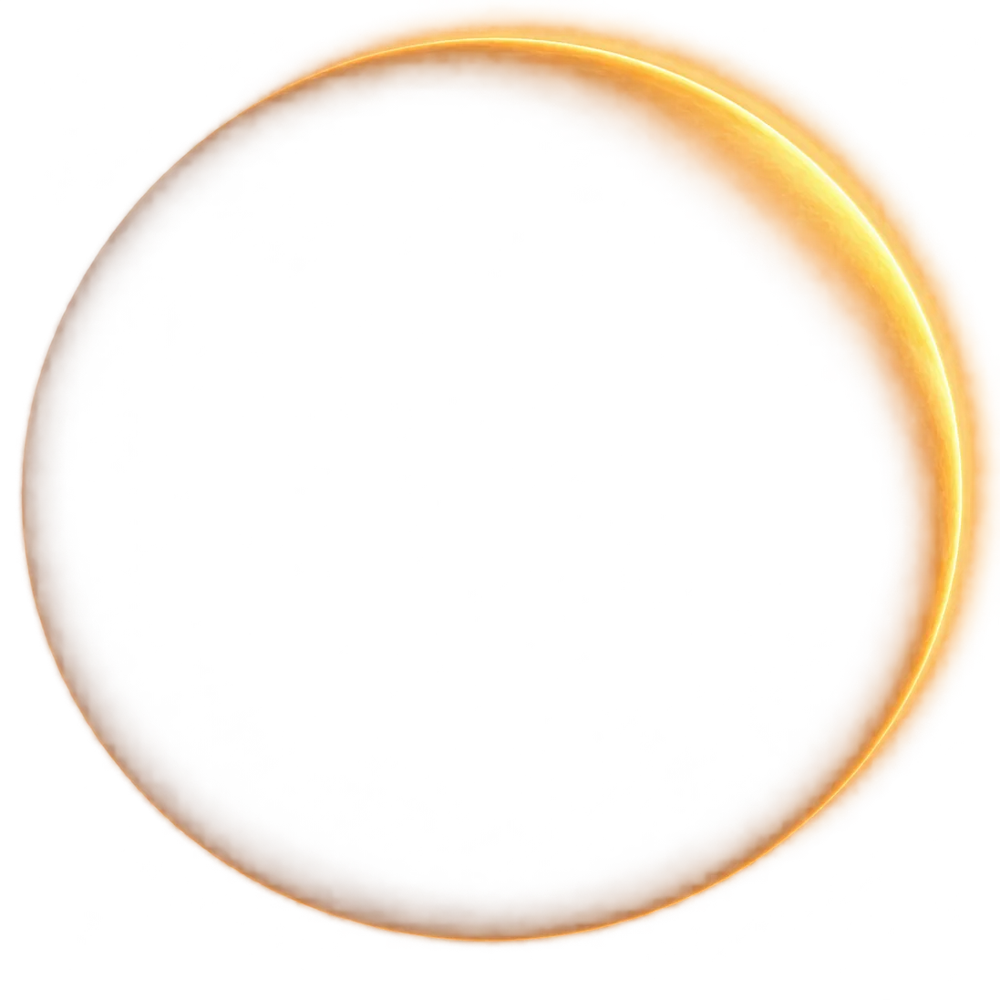
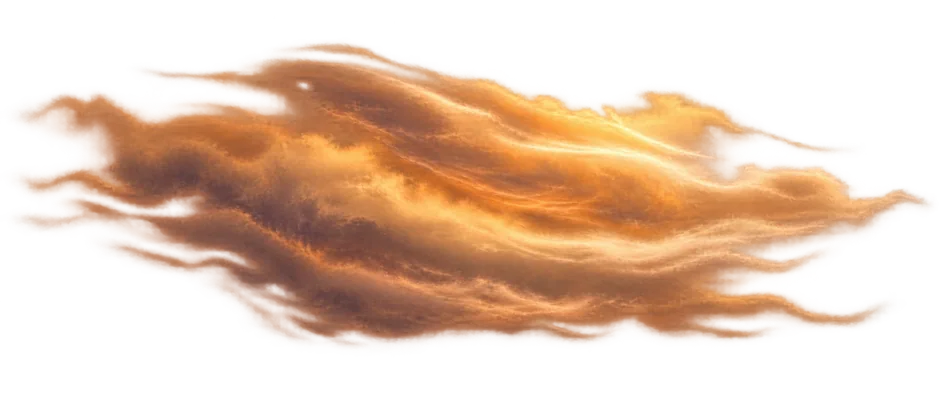
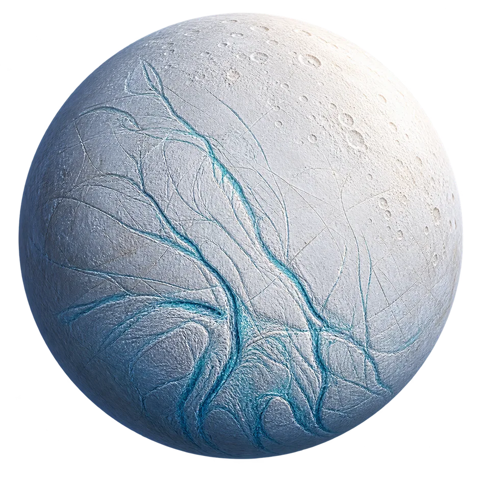
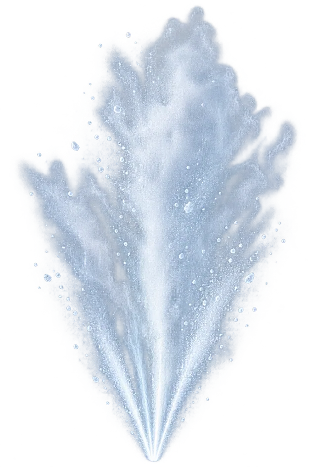
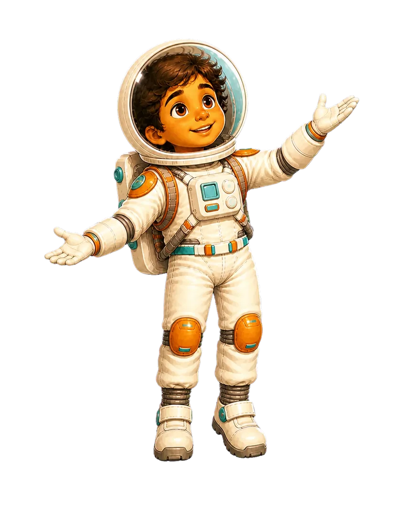
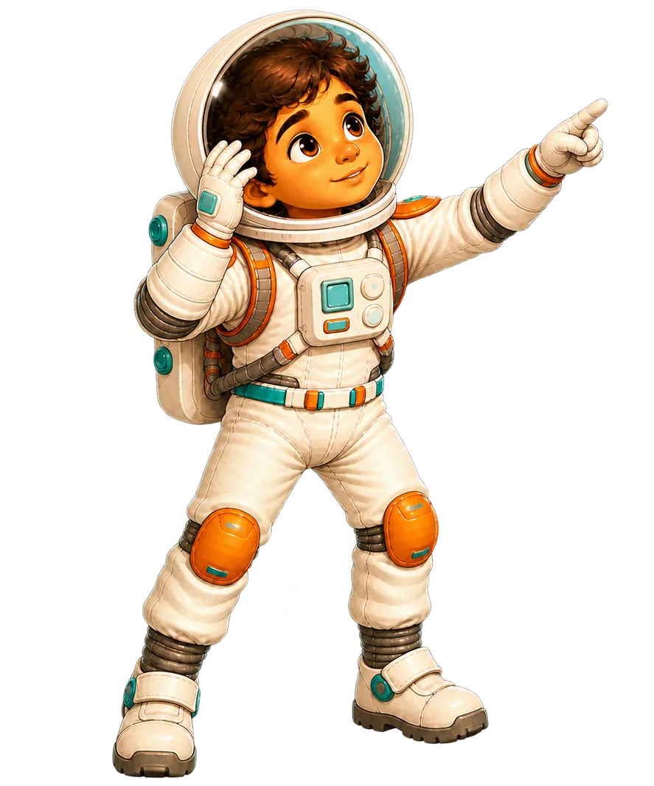
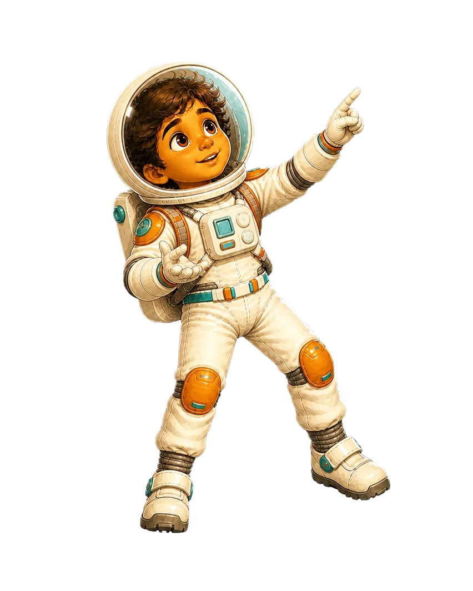
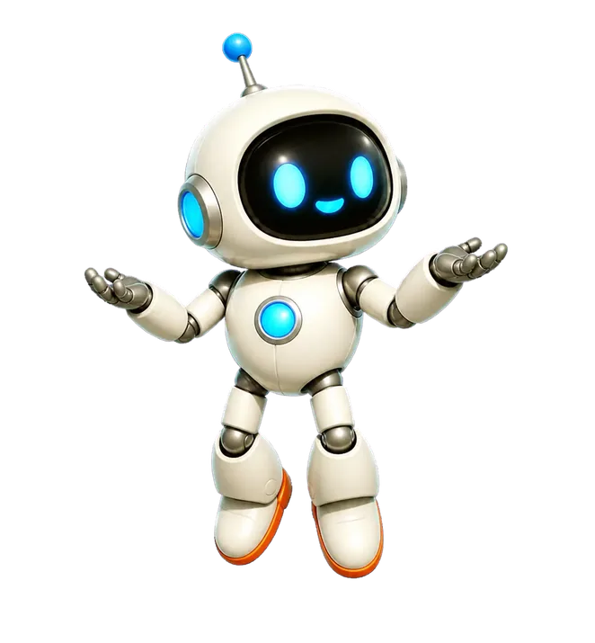
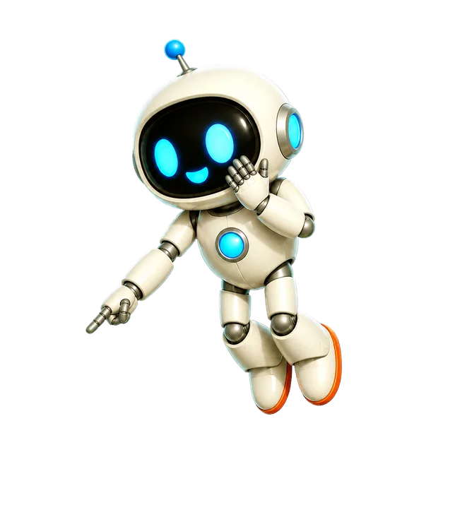
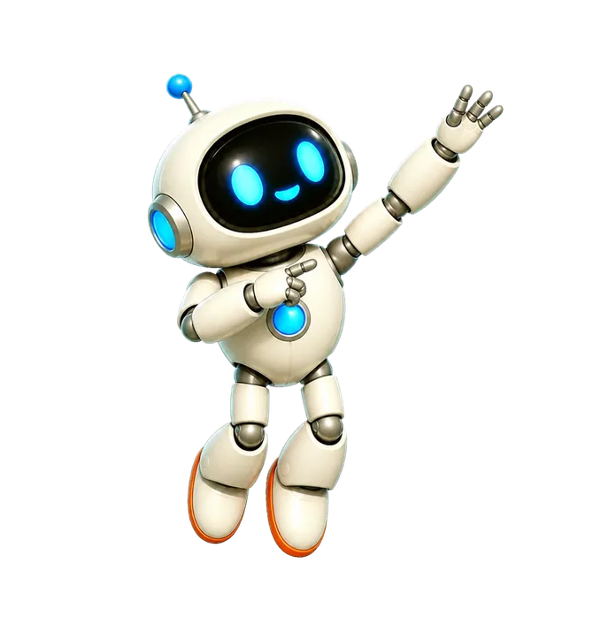
Tap the diagram to replay its motion. Illustrations are explanatory.